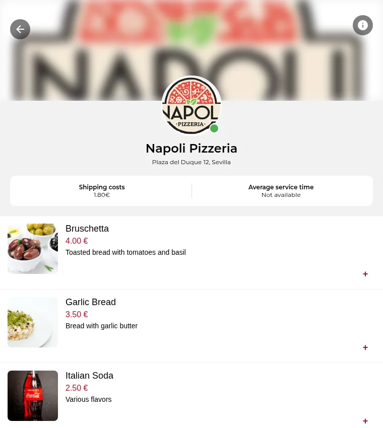

DeliverUS
A collaborative restaurant ordering project, with separate applications for customers and restaurant owners.
Free demo with fictional data. Orders and edits are saved in this browser. Switch roles to try the full order cycle, or reset the demo to start again.
The applications

